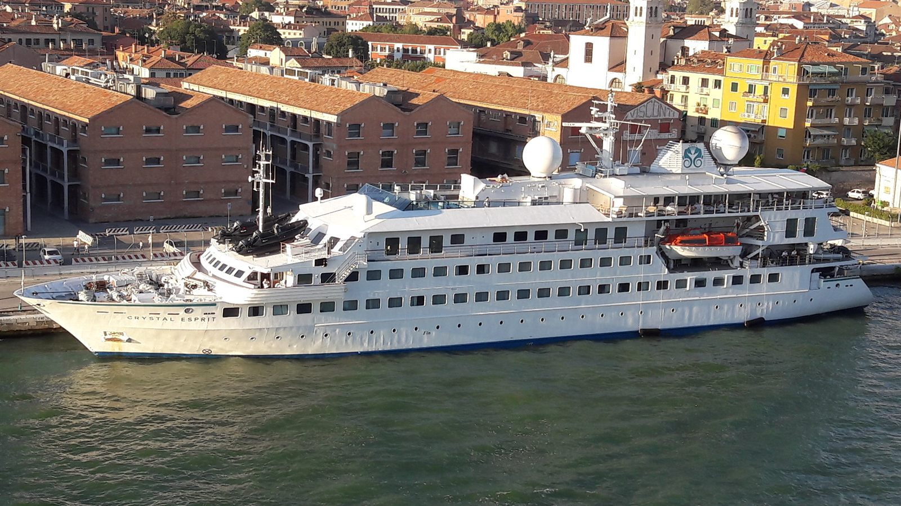

Um yacht de expedição com 5 decks, 3.370 GT, 26 suítes, marina climatizada, Science Hub e capacidade para até 48 hóspedes em viagens regulares por Galápagos durante todo o ano.

O National Geographic Islander II foi construído pelo estaleiro Flender Werft, em Lübeck, Alemanha, e concluído em 1991. Antes de chegar à operação da Lindblad Expeditions, navegou sob outros nomes como Aurora I, MegaStar Taurus e Crystal Esprit, mantendo o mesmo casco identificado pelo IMO 8705266.
Depois da compra anunciada pela Lindblad Expeditions em 2021, o navio passou por um refit amplo para a operação em Galápagos, com renovação dos interiores, criação de uma marina climatizada, integração do Science Hub e adaptação dos espaços públicos para embarques frequentes em Zodiac, snorkeling e observação de fauna.
A embarcação foi oficialmente apresentada como National Geographic Islander II em 2022 para substituir o antigo National Geographic Islander. A proposta editorial da Lindblad combina gastronomia inspirada nas quatro regiões do Equador, equipe local, décor artesanal, ponte aberta, plunge pool, áreas externas em teak deck e operações de campo com caiaques, stand-up paddle, glass-bottom boat e frota ampliada de Zodiacs.
O National Geographic Islander II opera durante todo o ano nas ilhas Galápagos, com foco em roteiros de expedição de pequena escala que priorizam desembarques constantes, interpretação naturalista e acesso mais íntimo a enseadas, pontos de snorkeling e áreas protegidas do arquipélago.
* Planta resumida por áreas. Para o mapa oficial detalhado de cabines e espaços públicos, acesse Lindblad Expeditions — deck plans.